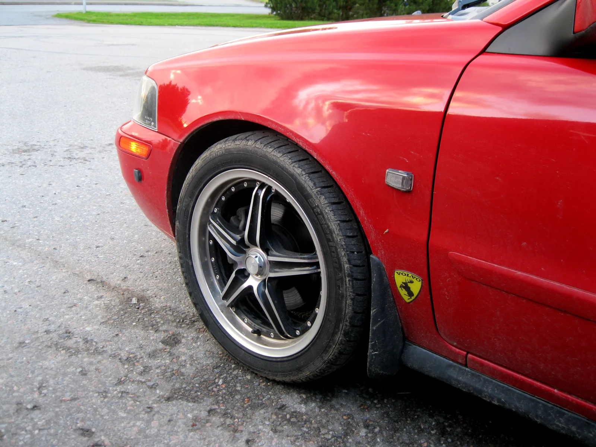
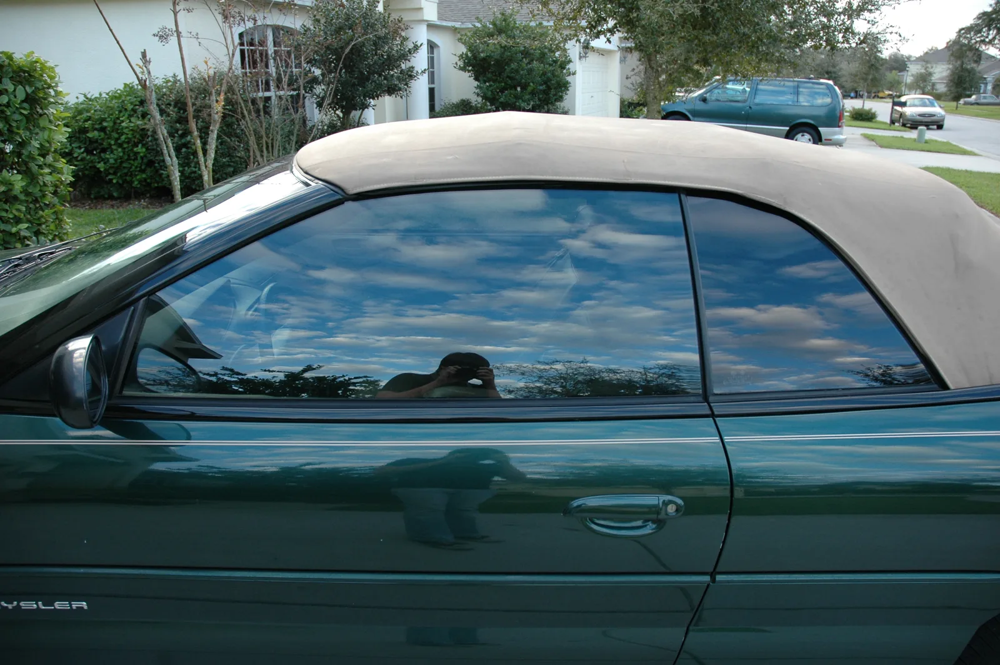
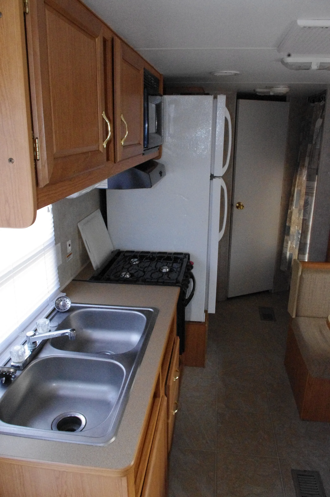

▲ 차체 폭을 넘지 않는 휠·타이어 교체는 승인 없이 가능하지만, 기준을 넘으면 얘기가 달라진다 ⓒ Wikimedia Commons
"휠만 인치업했을 뿐인데 불법이라고요?" 자동차 튜닝을 둘러싼 가장 흔한 오해다.
실제로는 정반대인 경우가 많다. 차체 폭을 넘지 않는 휠·타이어 교체는 승인이 필요 없는 합법 튜닝이지만, 오히려 별생각 없이 넘어가는 엔진 교체나 좌석 수 변경은 반드시 승인을 받아야 하는 구조변경이다.
합법과 불법을 가르는 기준은 명확히 정해져 있다. 자동차관리법 제34조와 국토교통부 고시 「자동차 튜닝에 관한 규정」이 그 기준이다.
1. 반드시 승인받아야 하는 구조변경 항목
자동차관리법 제34조는 자동차 소유자가 국토교통부령으로 정하는 구조·장치를 변경하려면 시장·군수·구청장의 승인(튜닝승인)을 받도록 정하고 있다. 실무 창구는 한국교통안전공단과 정부24 자동차 튜닝(구조변경) 전자승인 서비스다.
| 구분 | 내용 |
|---|---|
| 치수·중량 | 자동차의 길이·너비·높이, 총중량 변경 |
| 원동기(엔진) | 다른 배기량·형식의 엔진으로 교체 |
| 연료장치 | 가솔린→LPG 개조 등 연료 종류·장치 변경 |
| 좌석 수 | 승차정원에 영향을 주는 좌석 추가·제거 |
| 조향·제동·주행장치 | 조향장치, 제동장치, 동력전달장치 등 구조 변경 |
| 적재함·용도 변경 | 화물자동차 적재함 변경, 캠핑용자동차 개조 등 |
| 등화장치 | 전조등 형식 변경 등 일부 등화장치 |
📍 "경미한 변경"은 별표로 따로 정해져 있다
범퍼 외관을 바꾸거나 국토교통부 인증을 받은 튜닝부품으로 교체하는 경우, 그 외 국토교통부 고시 「자동차 튜닝에 관한 규정」 별표 1에 열거된 항목은 승인 대상에서 제외된다. 반대로 별표에 없는 변경은 원칙적으로 승인 대상이라고 보는 것이 안전하다.
2. 승인 없이 가능한 경미한 변경
모든 변경에 승인이 필요한 것은 아니다. 일상적으로 하는 손질 수준의 변경은 튜닝승인 없이도 합법이다.
✅ 승인 없이 가능한 대표 사례
· 휠 인치업·타이어 규격 변경 — 차체 너비를 벗어나지 않는 범위 내
· 범퍼 등 외관 부품 교체 — 구조·성능에 영향을 주지 않는 수준
· 국토교통부 인증 튜닝부품 장착 — 별도의 성능·안전 인증을 통과한 부품
· 블랙박스·내비게이션 등 전기장치 부착(구조 변경이 아닌 경우)
▲ 휠·타이어가 차체 폭 밖으로 튀어나오면 얘기가 달라진다 — 이 경우 반드시 타이어를 덮는 구조(휀다 등)를 갖춰야 한다 ⓒ Wikimedia Commons
📍 휠 인치업, 어디까지 괜찮을까
휠 사이즈를 키우거나 타이어 종류를 바꾸는 것 자체는 합법이다. 다만 휠·타이어가 차체 폭보다 바깥으로 돌출되면 불법이며, 돌출이 불가피하다면 타이어를 덮는 휀다(펜더) 구조를 반드시 갖춰야 적발을 피할 수 있다.
3. 선팅은 튜닝승인이 아니라 도로교통법 문제다
선팅(창유리 필름)은 자동차관리법상 튜닝승인 대상이 아니다. 대신 도로교통법 시행령 제28조가 정한 가시광선 투과율 기준으로 별도 단속된다.
| 부위 | 기준 |
|---|---|
| 앞면 창유리(전면 유리) | 70% 이상 |
| 운전석 좌우 옆면 창유리 | 40% 이상 |

▲ 앞유리와 운전석 옆유리는 가시광선 투과율 기준을 밑돌면 안 된다 ⓒ Wikimedia Commons
기준보다 짙게 선팅해 교통안전 등에 지장을 줄 수 있는 상태로 운전하면 과태료가 부과된다. 다만 뒷좌석 옆유리·뒷유리는 별도 투과율 규제가 없어, 뒷좌석만 짙게 선팅하는 경우가 많다.
4. 캠핑카 개조 — 소유자가 직접 신청할 수 있다
승합차·화물차를 캠핑카로 개조하는 것도 대표적인 승인 대상 구조변경이다. 취사시설·취침시설 등 자동차관리법령이 요구하는 필수 시설 요건을 갖춰야 '캠핑용자동차'로 승인받을 수 있다.
✅ 캠핑카 구조변경 절차 요약
· 과거에는 튜닝 면허를 가진 업체가 개조한 차량만 승인 대상이었지만, 현재는 차량 소유자가 먼저 개조신고를 하고 원하는 튜닝업체를 골라 작업을 맡길 수 있음
· 작업 완료 후 한국교통안전공단의 튜닝검사를 받아야 정식으로 캠핑용자동차로 등록됨
· 취사대·싱크대·침대 등 필수 시설 기준 미달 시 승인 불가

▲ 캠핑카 개조는 취사시설 등 필수 시설 요건을 갖춰야 승인이 난다 ⓒ Wikimedia Commons
5. 구조변경검사(튜닝검사) 절차 — 승인부터 검사까지
구조변경은 '승인 → 시공 → 검사'의 3단계로 진행된다. 승인만 받고 검사를 건너뛰면 그 자체로 위법이다.
| 단계 | 내용 |
|---|---|
| ① 튜닝승인 신청 | 자동차민원 대국민포털·정부24 또는 한국교통안전공단 지사에 튜닝승인신청서 제출 |
| ② 승인 | 시장·군수·구청장(실무상 한국교통안전공단 위탁 처리) 승인 |
| ③ 시공 | 자동차정비업자 또는 자동차제작자로부터 튜닝 및 관련 정비를 받아야 함 |
| ④ 튜닝검사 | 승인일로부터 45일 이내에 한국교통안전공단 검사소에서 튜닝검사(구조변경검사) 완료 |

▲ 튜닝검사는 한국교통안전공단 자동차검사소에서 진행된다 ⓒ CarPrism
튜닝승인 신청과 진행 상황 조회는 정부24에서 온라인으로 처리할 수 있다. 정부24 튜닝(구조변경) 전자승인 바로가기
6. 무승인 튜닝 적발 시 처벌 — 벌금과 원상복구명령
승인 없이 구조를 변경하면 형사처벌 대상이다. 자동차관리법 제81조는 승인 없이 튜닝을 한 자, 그리고 승인 없이 튜닝된 사실을 알면서 그 차량을 운행한 자 모두를 처벌 대상으로 규정한다.
| 위반 유형 | 제재 |
|---|---|
| 무승인 구조변경 | 1년 이하 징역 또는 1천만원 이하 벌금 (자동차관리법 제81조) |
| 무승인 튜닝 차량인 걸 알고도 운행 | 위와 동일한 형사처벌 대상 |
| 튜닝승인 후 45일 내 튜닝검사 미이행 | 100만원 이하 벌금 |
| 적발 시 공통 조치 | 원상복구명령 — 불응 시 추가 처벌 |
| 선팅 기준 위반(도로교통법) | 과태료 부과 |
📍 "몰랐다"도 면책 사유가 되기 어렵다
법원은 무승인 튜닝 처벌 조항의 적용 범위를 두고 여러 차례 판단을 내린 바 있다. 정비업체를 통해 부품을 교체했더라도 그 변경이 승인 대상 구조변경에 해당한다면, 정비업체가 아닌 차량 소유자도 책임에서 자유롭지 않을 수 있다. 튜닝 전 승인 대상 여부를 먼저 업체·한국교통안전공단에 확인하는 것이 안전하다.
7. 요약
자동차 구조변경(튜닝)은 무엇을 바꾸느냐에 따라 승인 필요 여부가 갈린다. 길이·너비·높이·총중량, 엔진, 연료장치, 좌석 수, 캠핑카 개조 등은 반드시 튜닝승인을 받아야 하고, 차체 폭 이내 휠·타이어 교체나 범퍼 외관 변경, 인증 튜닝부품 장착 등은 승인 없이 가능하다.
승인 대상이라면 '승인 → 시공 → 검사' 3단계를 모두 거쳐야 한다. 특히 승인일로부터 45일 이내 튜닝검사를 받지 않으면 그 자체로 벌금 대상이 된다.
무승인 구조변경은 1년 이하 징역 또는 1천만원 이하 벌금과 원상복구명령으로 이어질 수 있다. 선팅은 튜닝승인이 아닌 도로교통법상 가시광선 투과율 기준(앞유리 70%·운전석 옆유리 40% 이상)으로 별도 단속된다는 점도 기억해두자.